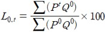
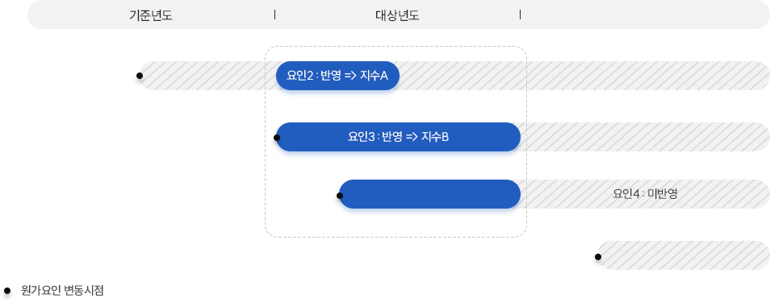
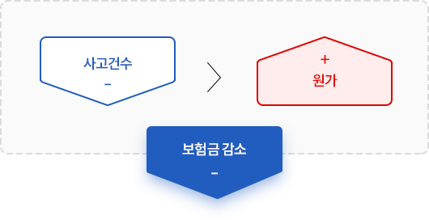
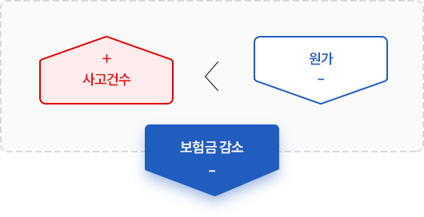
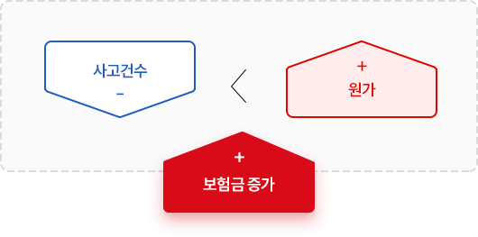
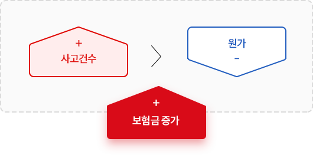
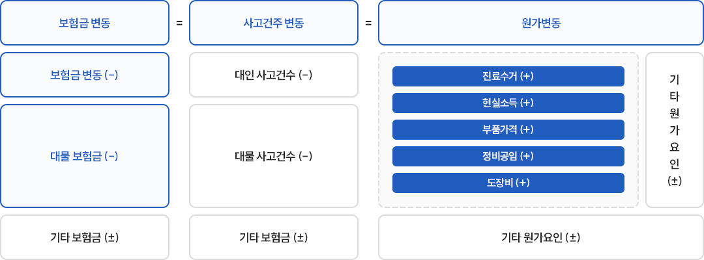

자동차보험금 원가지수
메뉴설명-
자동차보험금 원가지수 산출결과
자세한 사항은 아래의 첨부파일를 참고하시기 바랍니다
-
첨부파일
원가지수란
-
원가지수는 자동차보험금에 영향을 미치는 원가요인 중 객관적인 원가변동 파악이 가능한 항목의 가격 변동을 측정한 지수입니다.
-
객관적인 보험금 원가 변동요인 공표를 통해 일반 소비자의 자동차보험에 대한 이해를 돕기 위함입니다.
원가지수 구성
-
원가지수는 의무담보인 대인담보와 대물담보 중 진료수가·현실소득, 부품가격·정비공임·도장비로 구성됩니다.
* 원가지수 산출 대상담보(자차담보 등) 확대 여부는 지속적으로 검토할 예정
** 고가차량 증가, 인구 고령화 등 객관적인 지수측정이 곤란하거나, 위자료 및 장례비 등 정액지급 항목, 사고발생률 등 사후적 결과로 측정하는 항목은 제외
대인담보
진료수가 지수 : 병원치료비 산정기준인 진료수가의
변동지수현실소득 지수 : 휴업손해액(부상)과 상실소득액(사망, 후유장애) 산정기준인 현실소득액 변동지수
대물담보
부품가격 지수 : 제조사가 공시하는 부품가격변동지수
정비공임 지수 : 자동차 보험수리에 사용하는 정비공임 변동지수
도장비 지수 : 자동차 보험수리에 사용하는 도장비 변동지수
원가지수 공표
-
원가지수는 매년 6월에 보험개발원 홈페이지(www.kidi.or.kr) 를 통해 발표할 예정입니다.
원가지수 산출식
-
대상년도에 발생한 원가요소의 가격변동으로 인한 보험금 항목별 가격변동을 직전년도*와 비교하여 산출합니다.
* 원가지수 기준연도(100) : 지수대상년도의 직전년도(예 : `21년 지수의 기준연도는 `20년)
※ 지수산식 : 라스파이레스 산식(Laspeyres’Formula)을 사용하며, 물가지수와 같은 종합지수에 널리 이용되는 지수 계산 방식의 하나임
 L : 지수, P : 가격, Q : 수량, 0 : 기준시점, t : 비교시점
-
항목별 지수 산출 시 반영대상은 대상년도에 해당 원가의 가격변동이 발생한 원가 요소를 대상으로 합니다.원가요인 반영 대상기간
 -
보험금은 원가와 사고건수 증감 정도에 따라 증가 또는 감소할 수 있습니다. 즉, 원가지수와 사고건수 간 변동 수준(크기)의 격차에 따라 보험금 변화 방향이 다를 수 있습니다.
-
예시는 아래 그림과 같습니다.(예시 1) 보험금 감소 경우
(예시 1 - 1 )
 (예시 1 - 2 )
 (예시 2 - 1 )
 (예시 2 - 2 )
 (예시 1-1)의 사례는 아래와 같습니다.